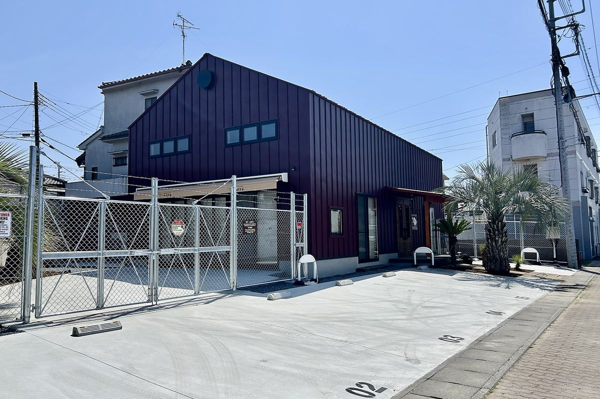
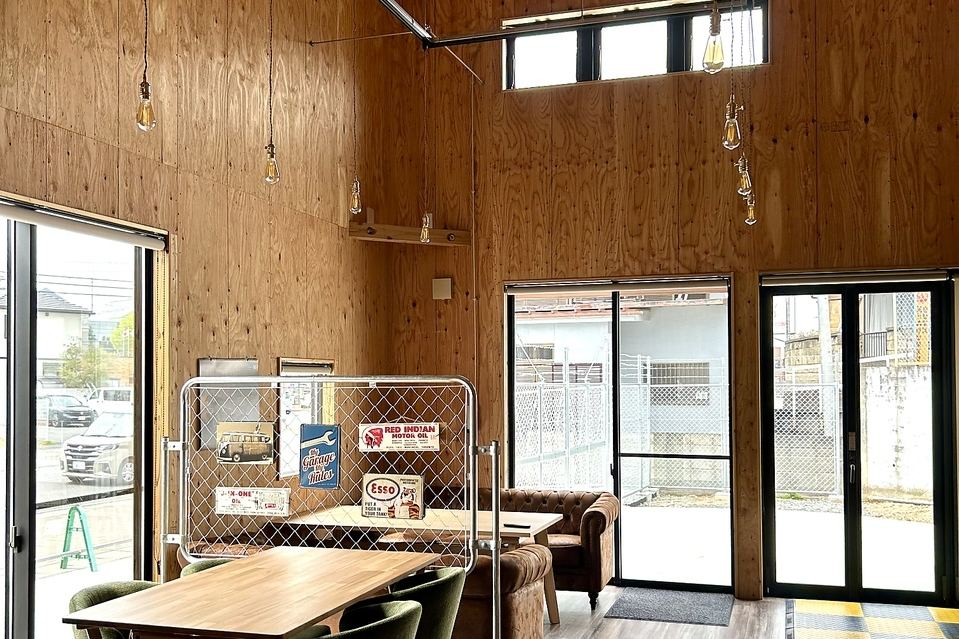
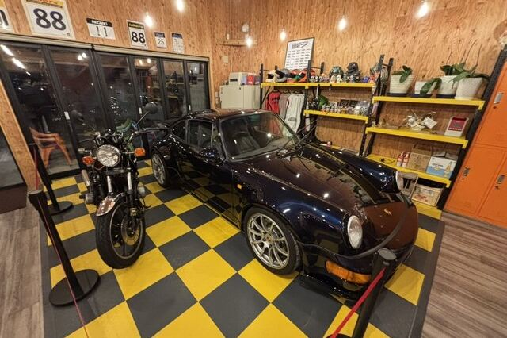
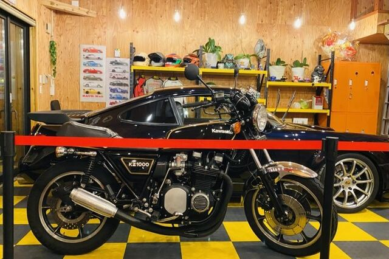
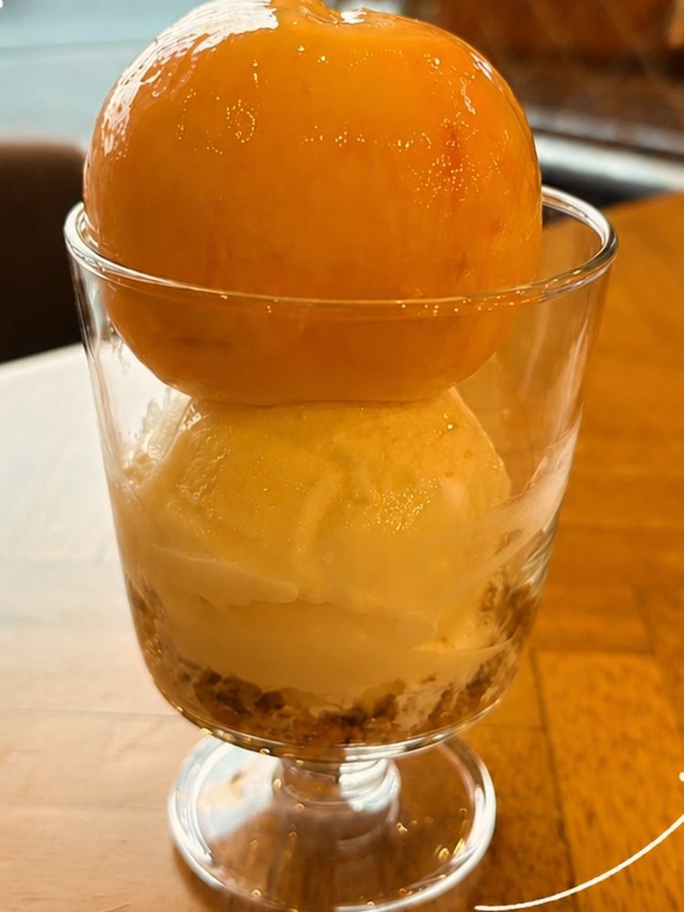

茨城県古河市原町
コンクリート土間のガレージで、昔ながらのナポリタンとアジアの一皿をお出ししております。


父が、老後の楽しみにと独りで少しずつ形にしてきた建物です。その秘密基地を母と娘のふたりで受け継ぎ、2025年5月2日にガレージカフェとして開けました。
ナポリタンは、父のリクエストにこたえて、昔なつかしい喫茶店の味を再現し、お出ししております。


父の車とバイクを置いております。時期によって入れ替わります。
季節にあわせてお出ししているお品です。価格はお問い合わせください。

佐野・小林果樹園の桃を使ったパフェです。
チリコンカンと、フレッシュなミニトマトのサルサを合わせました。シラチャーマヨを添えて。
夏野菜のラタトゥイユに、フレッシュなトマトサルサを合わせた一皿です。
26席をご用意しております。
店舗前面に7台分ございます。台数に限りがございますので、なるべくお乗り合わせでのご来店にご協力をお願いいたします。
店内はすべて禁煙です。屋外に喫煙スペースをご用意しております。
現金のほか、各種クレジットカード・電子マネー・QRコード決済もご利用いただけます。
臨時休業がございます際は、Instagramにてお知らせしております。
「遊び心溢れるガレージ空間で、心温まる気配りと絶品ナポリタンに出会う。西日が強くなってきたらすぐにカーテンを下ろしてくださったり、電源を貸してくださったりと、その温かい対応に居心地の良さがさらに深まりました。」
食べログの口コミより（2026年6月投稿）
「駐車場も広く店内やお手洗いが清潔で居心地が良く素敵なお店でした。お料理も素材それぞれ拘りの味付けで大満足のお店です。店主の方も優しくてお話しさせていただき嬉しかったです。」
ホットペッパーグルメの口コミより（2025年11月来店）
「海南鶏飯（ハイナンジーファン）を注文。しっとりとした鶏肉の旨味だけで、タレもいらないくらい美味しくいただけます。シンガポール風のチキンライスはこのお店でしか食べれない一品に思えました。」
食べログの口コミより（2026年1月投稿）
| 住所 | 〒306-0025 茨城県古河市原町6-16 地図アプリで開く（駐車場7台） |
|---|---|
| 電話 | 090-6729-1790 |
| 営業時間 | 11:00〜20:00（L.O. 19:00） |
| 定休日 | 水曜日・木曜日 |
| 席数 | 26席 |
| 駐車場 | 店舗前面に7台（なるべくお乗り合わせでのご来店にご協力をお願いしております） |
| お支払い | 現金／クレジットカード（VISA・Master・AMEX・Diners・JCB）／電子マネー（Suica・PASMO・ICOCA・QUICPay）／QRコード決済（PayPay・d払い・au PAY・メルペイ） |